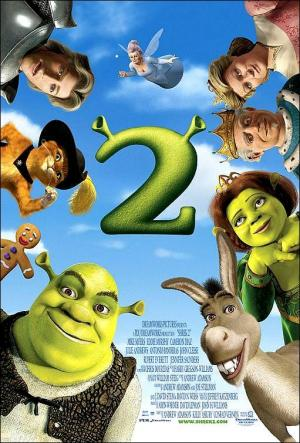
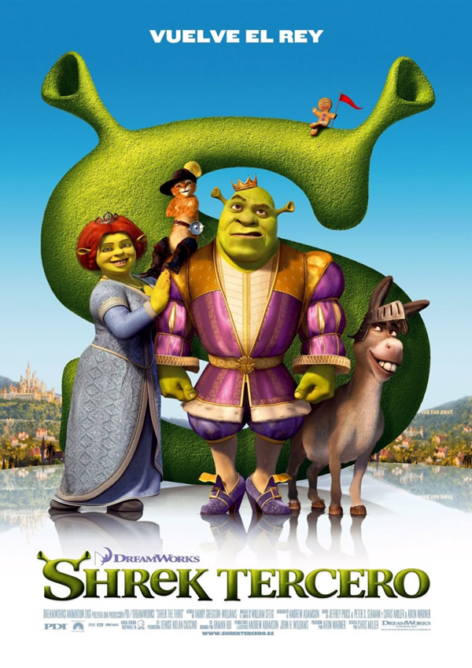
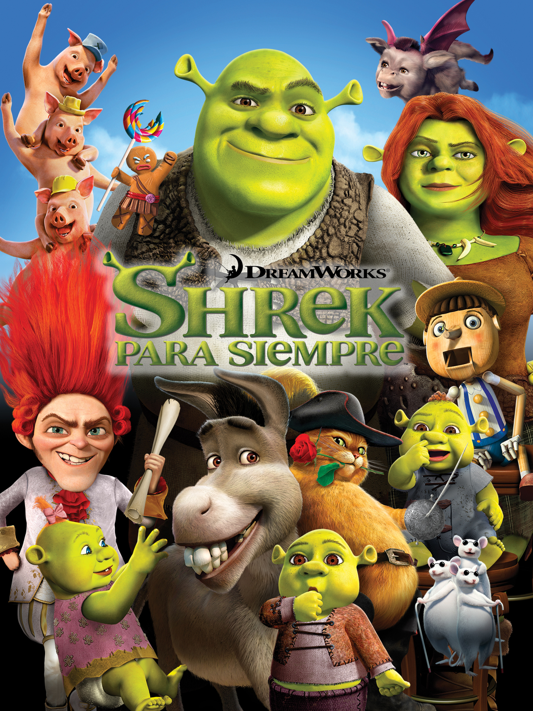

Shrek
En un pantano muy lejano, Shrek, un ogro verde, se ve envuelto en una aventura para rescatar a la princesa Fiona y derrotar al malvado Lord Farquaad.

Shrek 2
Shrek y Fiona regresan de su luna de miel y son invitados a visitar a los padres de Fiona, lo cual resulta en un enfrentamiento entre Shrek y el encantador Príncipe Encantador.

Shrek Tercero
Shrek se ve obligado a convertirse en rey tras la muerte del rey Harold. Sin embargo, Shrek no se siente preparado para el papel y busca al primo de Fiona, Artie, para ocupar el trono en su lugar.

Shrek para siempre
Shrek se encuentra atrapado en una realidad alterna donde Rumpelstiltskin ha tomado el control de Muy Muy Lejano. Shrek deberá encontrar una forma de revertir los cambios y recuperar a Fiona.